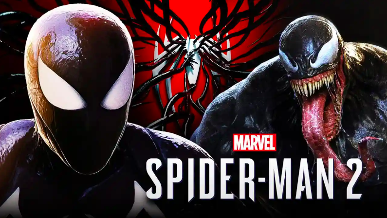
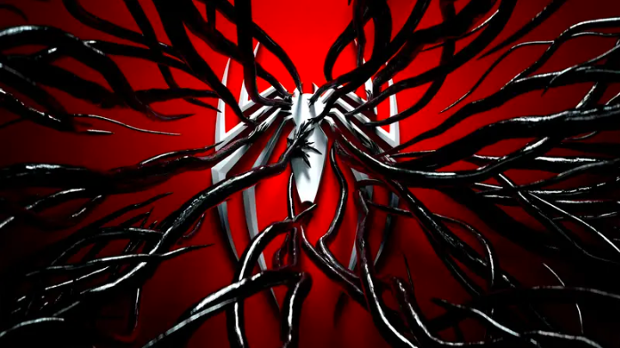
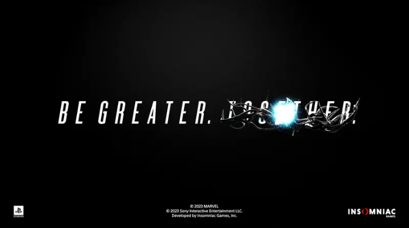
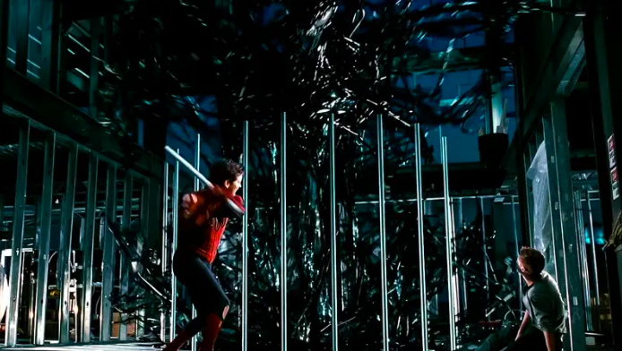
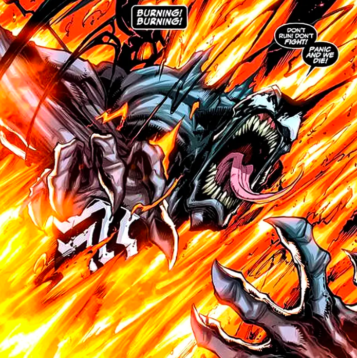

New Spider-Man 2 PS5 Trailer Spoils Venom's Big Weakness (Theory)
By Aeron Mer Eclarinal Posted on:June 10, 2023 Marvel's Spider-Man 2's gameplay trailer may have teased how Venom will be defeated in the game.
The symbiote was first shown off during the post-credits scene of Marvel's Spider-Man. At the end of the first game, Harry Osborn was seen inside a tank that is infused with the symbiote, with Norman promising a cure to his son.
PlayStation's Spider-Man 2 is set to show the aftermath of that sequence and the gameplay trailer revealed that Peter Parker has already been affected by the symbiote.
Did Spider-Man 2's Trailer Reveal Venom's Weakness?
During the logo section of Marvel's Spider-Man 2 gameplay trailer, electricity repels some of the symbiote when it covers the Spider-Man logo to reveal Marvel's Spider-Man 2 title.
Similarly, when the "Be greater. Together," slogan comes up at the end, electricity repels the symbiote again that wraps around the "Together" portion of the slogan.
Based on that tease, it's possible that electricity is the symbiote's main weakness in the game, a power that Miles Morales possesses.
Interestingly, in Tobey Maguire's Spider-Man 3, it was established that Venom's weakness is sound.
 Why Miles Morales Is the Key to Defeating Venom
Spider-Man voice actor Yuri Lowenthal teased Peter Parker's addiction to the Venom symbiote in Marvel's Spider-Man 2, noting that "there's a lot of colors" in his performance and the trailer already proved it:
“You have no idea… I think they dropped that [footage]… and I’m so glad they finally showed something... We took extra special care for when Spidey is just regular go-happy-lucky Spidey and when Spidey gets something going on [with the Symbiote]. And there’s a lot of colors. You saw some of them in the trailer they just dropped, but you ain’t seen nothing yet.”
That said, it seems that Peter will eventually go rogue at some point in the game, requiring Miles to clash with his mentor to try and set him free before they team up to take down Venom.
More so, Miles may end up failing to snap Peter out of the symbiote's influence at first, and this defeat could be where he finds out that Venom's weakness is electricity.
It's possible that Miles could also end up making a new Spider suit that could prevent him from being influenced by the symbiote, leading to an emotional and intense fight for Peter's humanity.
Marvel's Spider-Man 2 is expected to release on the PS5 at some point this fall.